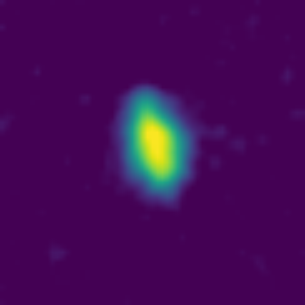
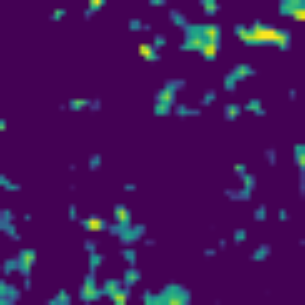
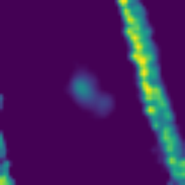
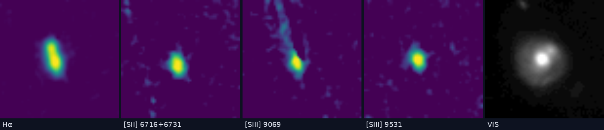

Star-forming clumps are luminous, compact (kpc-scale) regions of intense star formation embedded within gas-rich disks at cosmic noon (z ≈ 1–2). These structures can contribute up to ~50% of a galaxy's total star formation rate and are thought to play an important role in bulge assembly and internal galaxy evolution.
Using Hα emission-line maps rather than rest-frame UV images allows us to uncover clumps that would otherwise remain hidden, and to separate star-forming regions from contaminants such as AGN or mergers. Producing emission-line maps from Euclid NISP slitless spectroscopy effectively transforms a spectrometer into a photometer.
This project will confirm the detection of clumps, and hopefully help find outliers that may have been overlooked with the automated method.
Why star-forming clumps?
Galaxies at earlier cosmic times looked different from the smooth spirals around us today. Many were gas-rich and lumpy, forming their stars in a handful of giant clumps rather than evenly across a disk. These star-forming clumps can be a thousand times more massive than typical star-forming regions in the Milky Way, and together they can supply a large fraction of a galaxy's new stars. How clumps form, how long they live, and whether they spiral inwards and help build the central bulge are all open questions.
What you are looking at
The images come from ESA's Euclid space telescope. Besides taking pictures, Euclid records a spectrum for every object in its field of view. From those spectra we construct emission-line maps: images of a galaxy in the light of one spectral line only. The most important is Hα, emitted by gas that has been ionised by hot, young stars. Effectively, a Hα map shows where a galaxy is forming stars right now, not just where its stars already sit.
We have built such maps for about 1,300 star-forming galaxies at redshifts 0.3 to 1 in the COSMOS field, drawn from the Khostovan et al. catalogue of Hα emitters. For each galaxy you also get maps in the other lines that fall in Euclid's wavelength range (Hβ, [OIII], [SII], [SIII], the Paschen series and more), plus two photometric images (VIS and NISP-Y band) that show the starlight.
What the maps look like

Clean. The galaxy's Hα emission stands out clearly — circle the bright knots and pick "Clean" for the quality.

Noise. Scattered specks everywhere, none of them sitting on the galaxy. If the galaxy still shows through, pick "Noisy"; if specks are all there is, like here, pick "Unusable".

Artifact. The long diagonal streak is contamination from another object's spectrum, not emission — note the faint real galaxy near the centre. Pick "Artifact present".

Emission in several lines. One galaxy seen in Hα, [SII] and both [SIII] maps — the emission sits at the same position as the starlight (VIS, right). This is what to tick in question 3, and you can circle clumps on those frames too.
Why we need you
An automated algorithm has already searched the Hα maps for clumps, but the maps are noisy, and no algorithm perfectly separates real clumps from noise peaks and instrumental artifacts. Human eyes are still better at this.
Your marks are used in two ways. First, to check the automated catalogue: where several people independently circle the same spot, we can trust the detection; where nobody does, it was probably noise. Second, the marks become a training set for machine-learning clump finders, which need many examples of what people judge to be real. Along the way you may notice things no algorithm flags such as emission in unexpected lines, artifacts, mergers, oddities. Those are often the most interesting objects of all.
What to do
1 — Circle the clumps. On the Hα frame, click the centre of each compact bright knot and drag outward. Circles can be moved (drag), resized (drag the rim), and deleted. Real clumps sit on the galaxy — check the VIS frame to see where the galaxy is. Isolated specks far from the galaxy are noise; long diagonal streaks are contamination from other objects' spectra, not emission. You can draw circles on any emission-line frame, not only Hα: if a clump shows up in [OIII], [SIII] or a Paschen line, flip to that frame and circle it there — every circle records which map it was drawn on.
2 — Rate the Hα map. Clean, noisy-but-usable, artifact-contaminated, or unusable.
3 — Tick other lines with emission. Flip through every frame; tick a line only when you see emission at the galaxy's position. Leaving boxes unticked is normal.
The contrast controls are yours. Faint clumps often appear when you lower the floor or raise the softness; hard stretches sharpen bright knots. The VIS blend slider fades the starlight image in under any emission-line frame, so you can check that a knot really sits on the galaxy. Adjusting these affects only your view, never the data.
Shortcuts
←→ flip frames 1–4 map quality Backspace delete selected circle Enter submit
Frequently asked questions
Do I need any background in astronomy? No. The section above shows you everything you need: what a clump looks like, what noise looks like, and how to tell an artifact from real emission. If you are unsure about a particular galaxy, give it your best guess; several people see every image, so no single answer decides anything.
What exactly am I looking at? Each subject is one galaxy, shown as a stack of images you can flip through. The first frame is the Hα emission-line map, made from Euclid spectroscopy, and it shows the light of glowing hydrogen gas around young stars. The following frames are maps in other spectral lines, and the last two greyscale frames are photometric images (VIS and NISP-Y) showing the galaxy.
What if I don't see any clumps? That is a perfectly good answer. Press Submit & next without drawing anything — knowing that a galaxy has no visible clumps is just as useful to us as marking ten of them.
Why do the images look so grainy? The emission-line maps are built from slitless spectroscopy of faint galaxies, so they are inherently noisy. Isolated bright specks scattered around the frame are noise; real clumps sit on the galaxy and stand out from their surroundings.
What are the long diagonal streaks? Contamination from the spectra of other objects in the field — an instrumental artifact, not emission. If one crosses a map, pick "Artifact present" in the quality question.
Why does the answer list include lines the galaxy doesn't have? Every galaxy gets the same fixed list, covering all the lines the survey can capture. Depending on a galaxy's redshift, only some of those lines land in Euclid's wavelength range, so most galaxies only have maps for a few. Leave the rest unticked.
How many people look at each galaxy? Five, for now. A galaxy is retired once it has been classified five times, and we compare all five answers when we build the final catalogue.
What happens with my classifications? They are used to verify an automatically produced clump catalogue and to train machine-learning models to find clumps in Hα maps. The results will feed into a scientific publication on star-forming clumps in Euclid galaxies; volunteers' contributions will be acknowledged.
This project is run by Andrea Henderson de la Fuente (University of Oxford) with the Euclid Consortium.
Loading the sample…
loading galaxy…
floor in σ above background · VIS blend fades the starlight image under emission-line frames
1 · Circle every clump (drag on the image — usually on Hα)
No circles yet. If you see no clumps, that's a valid answer.
2 · How is the Hα map?
3 · Emission in other lines? (tick all that apply)
Notes (optional)
0classifications
0galaxies started
0retired (≥5)
0circles drawn
0classifiers
Research-team sign-in required for exports.
What do the columns and downloads mean?
The tiles.Classifications is the total number of submissions; galaxies started is how many different galaxies have at least one; retired counts galaxies that have reached 5 classifications and are no longer shown to new visitors; circles drawn is the total number of clump circles; classifiers is the number of distinct classifier names.
Galaxy — the Euclid source ID. Click any row to open that galaxy below the table and see everyone's circles overlaid (classifiers shown anonymously).
z — the galaxy's redshift, from the Khostovan catalogue.
Hα — ✓ if this galaxy has an Hα map; — means Hα falls outside Euclid's wavelength range for its redshift, so the first frame is another line.
Class. — how many people have classified this galaxy so far (it retires at 5).
Circles (med) — the median number of circles drawn per classification: a robust estimate of how many clumps people see.
Quality consensus — the most common answer to "How is the Hα map?" (Clean / Noisy / Artifact / Unusable).
Disagreement — 0 to 1: how much classifiers differ on this galaxy, combining the spread in their circle counts with how split the quality votes are. Shown once a galaxy has 2+ classifications; high values (red) mark galaxies worth a second look — tick "Sort by disagreement" to review those first.
Lines ticked — the other emission lines people have reported seeing (up to the three most-ticked).
The downloads (research team only, after sign-in):
Classifications CSV — one row per submitted classification: classifier name, quality answer, lines ticked, number of circles, notes, timestamp.
Marks CSV — one row per individual circle: which frame it was drawn on, the centre in 101-px stamp coordinates (col = x+20, row = 61−y+20, origin bottom-left), and the radius in pixels and arcsec.
Consensus catalogue CSV — circles from different people are clustered, and clusters marked by at least two distinct classifiers are kept: one row per agreed clump with the mean centre and radius plus agreement counts, ready to compare against the automated catalogue.
ML labels CSV — the same consensus clumps written as YOLO-style normalised bounding boxes, ready to train a machine-learning clump finder.